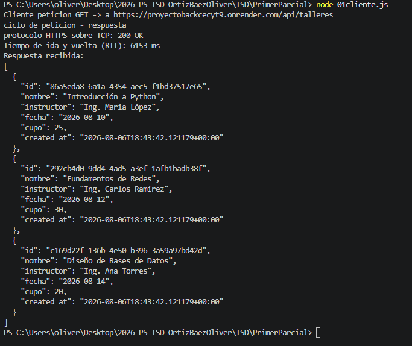

Captura de la Respuesta del Código

Análisis de la Petición
¿Qué pasó?
Se creo una funcion asincrona que detectara el tiempo de latencia entre la api talleres y el usuario, todo a travez de una peticion de tipo get
¿Se conectó exitosamente?
Si, ya qu nos arrojo el codigo 200 que indica que todo va bien, asi como la latencia, es decir lo del tiempo que tarda en viajar una peticion y ser respondida
¿Qué elementos se obtuvieron?
Bueno, nos dio bastantes datos, como el id de la tabla, nombre, entre otros, observando que lo dio en formato nombre, variable, propio de un json